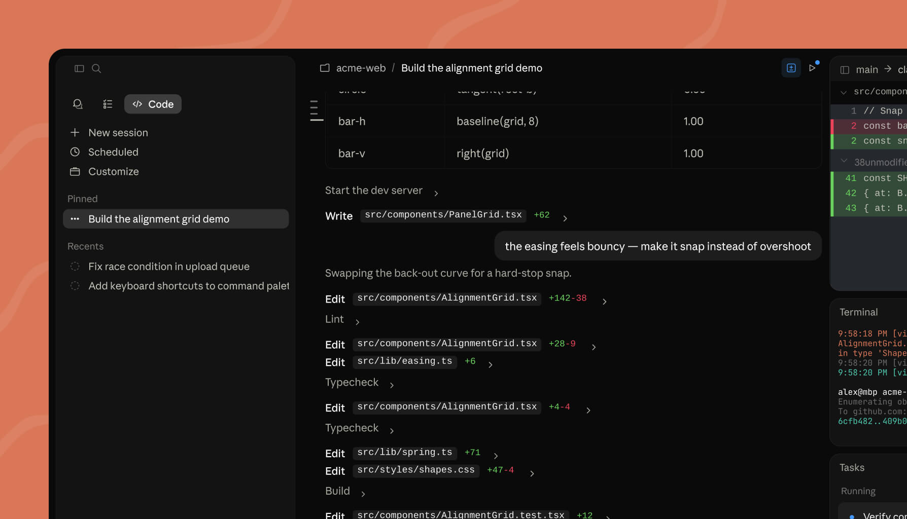
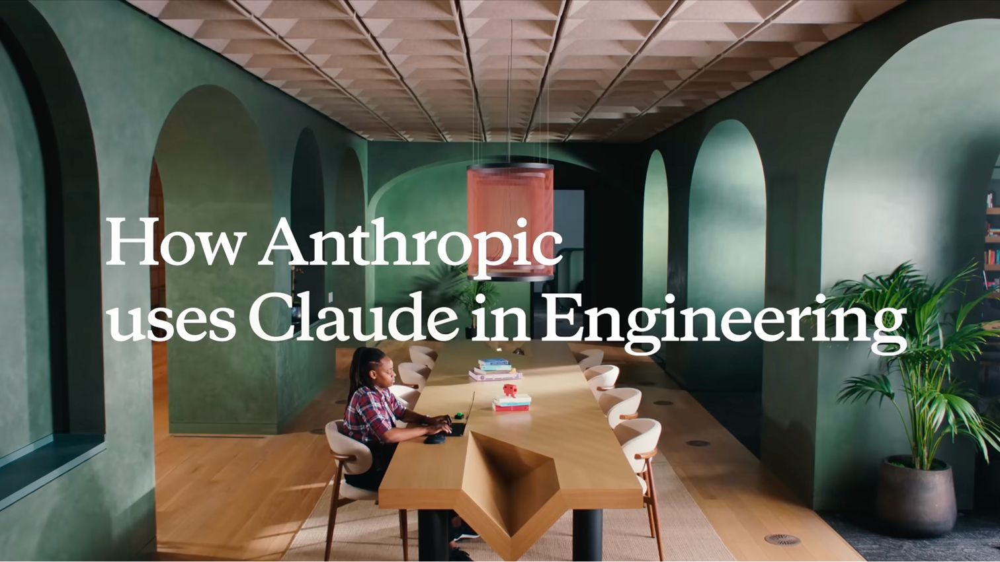

Executive Summary
In May 2026, Anthropic was valued at $965 billion, passing OpenAI for the first time. The AI industry's pecking order had flipped — yet the force behind that moment was not benchmark scores. Anthropic's consumer user base is roughly 5% the size of ChatGPT's. And still it led on revenue. Something other than a smarter model was moving the price.
That something lay in the composition of revenue. About 80% of Anthropic's revenue comes from enterprise customers. Enterprise revenue is stickier and more predictable than consumer revenue, so investors assign a higher value to each dollar of it. And what sustains that stickiness is neither price nor performance — it is data trust: the ability to not train on customer data, to make usage auditable, and to clear compliance in regulated industries. Whether a regulated company can hand over its own data with confidence was the real bottleneck for adoption.
For anyone who works with data, the signal this event sends is clear. As model performance levels off, the variable that divides the value of an AI business shifts toward "who trusts whom with their data." This piece traces that $965 billion price tag back to revenue quality, and to the data trust that underwrites it, to read why governance becomes the moat.
Key Figures
Sources: Fortune, TradingKey, CNBC
Four numbers show the weight of this reversal at a glance. The two companies' valuations, the share of Anthropic's revenue coming from enterprise customers, their annualized revenue over the same period, and a gap that the common yardstick of consumer users simply cannot explain. The fact that what flipped the ranking was not user count but revenue quality lives inside these figures.
$965B
Anthropic valuation
World's most valuable AI startup, topping OpenAI ($852B) for the first time
80%
Enterprise revenue share
About 80% of Anthropic's revenue is from enterprise; OpenAI is in the 40s
$47B
Annualized revenue run rate
Ahead of OpenAI's roughly $25B; projected to clear $50B soon
5%
Consumer user share
Anthropic's consumer base vs. ChatGPT — yet still ahead on revenue
The Ranking Flipped — but Not Because of the Model
In late May 2026, Anthropic closed a new funding round of about $65 billion, setting its valuation at $965 billion. The round was led by Altimeter, GreenOaks, Dragoneer, and Sequoia, and that valuation made Anthropic the most expensive AI startup in the world. The point of comparison is OpenAI, whose last funding round valued it at $852 billion. Anthropic crossed that number for the first time.

The common reading is "they built a better model, so they got more valuable." But that explanation doesn't fit this event well. On model-performance benchmarks the two companies trade places back and forth, and the name the general public knows better is still ChatGPT. Anthropic's consumer user base is estimated at around 5% of ChatGPT's. On user count alone, it isn't a contest.
And yet Anthropic led on revenue. Its annualized run rate stands at roughly $47 billion, ahead of OpenAI's roughly $25 billion over the same period. Some project it will clear $50 billion by the end of next month. A run rate that was $4 billion in July 2025 has exploded within a year. A swing to profitability is expected even on a quarterly basis, and with an S-1 draft filed confidentially, a fall 2026 listing is being discussed.
The core question: User count is one-twentieth, but revenue is higher and the valuation is higher. If a smarter model didn't flip the ranking, what moved the price? The answer lies in where the revenue comes from.
The 80% Number and the Economics of Sticky Revenue
About 80% of Anthropic's revenue comes from enterprise customers. OpenAI runs the other way. Its enterprise share has climbed into the 40s, but it still leans more on consumer revenue, and ChatGPT's weekly active users number more than 900 million. One industry observer's summary compresses the difference between the two companies: "OpenAI is a consumer company building enterprise products; Anthropic is an enterprise company with a consumer product."
Why this difference translates into valuation becomes clear when you look at the nature of the revenue. Consumer revenue grows fast but swings wide. Users come easily and leave easily. Enterprise contracts, by contrast, are hard to break once signed. A tool woven into a workflow carries a high switching cost, and as adoption spreads team by team, contracts expand year over year. High retention, low churn, expansion that compounds. What investors are looking at is exactly this predictability.
So even the same dollar of revenue gets priced differently. Revenue that is all but certain to still be there next year earns a higher multiple. Anthropic's growth engine, Claude Code, shows this structure plainly. Launched in May 2025, the tool reached an annualized $2.5 billion in revenue by February 2026, with more than half of it coming from enterprise. Eight of the Fortune 10 are Anthropic enterprise customers, and Anthropic's share of enterprise spend jumped from 10% in early 2025 to more than 65% by February 2026.

The shift in the customer base shows this expansion sits on a broad, thick foundation rather than one or two large enterprise deals. Two years ago, fewer than 1,000 companies used Anthropic's tools; now the number is more than 300,000. A company that comes in once grows its usage by adding teams, and new companies keep stacking on top. Stickiness comes not from a single customer who never leaves, but from customers who never leave growing fast — compounding.
Why it matters: Consumer virality grows user count quickly; enterprise contracts compound revenue that doesn't break. The 80% number means most of Anthropic's revenue is the latter — and the market paid a premium for that stickiness.
Beneath That Stickiness Lies Data Trust
So we have to go one level deeper. Enterprise revenue is sticky, true — but why did regulated large enterprises choose Anthropic in the first place? That eight of the Fortune 10 made the same choice has a reason that doesn't reduce to performance scores. In regulated industries like finance, healthcare, and government, the real barrier to AI adoption was not how smart the model is but "can we hand over our data safely?"
Anthropic answered that question with product. It doesn't use customer data for model training, lets customers set data-retention periods, and publishes how data is handled through its Trust Center. On top of that, it integrates with 28 security and compliance platforms — including Cloudflare, CrowdStrike, Okta, Palo Alto, Microsoft Purview, Wiz, and Zscaler — and its Compliance API makes conversations and activity logs auditable in existing SIEM systems. It also carries SOC 2 Type II certification, AES-256 encryption for data at rest, TLS 1.2 or higher in transit, and HIPAA and BAA support.
That these capabilities are a deciding factor in adoption, not abstract reassurance, is confirmed in customers' own words. Palo Alto Networks, which deployed Claude to 2,500 developers, noted that "Anthropic discusses security in every meeting — and for us, a top security company, that means a lot." GitLab found Claude stood out in its "ability to suppress unstable or deceptive behavior." What buyers in regulated industries look at is not benchmark rank but auditability. Anthropic made that auditability a default feature rather than an add-on, and so unblocked adoption.
The changed standard: In an era where performance has converged, what divided the choices of regulated enterprises was "can it be audited?" The ability to not train on the data, to trace the logs, and to clear compliance. Data trust is the real foundation laid beneath that 80% of revenue.
A Thesis the Market Priced In
Pull the pieces together and three facts line up. Anthropic's valuation passed OpenAI's; the force behind it was the enterprise customers carrying 80% of revenue; and what held those enterprise customers was data trust. Follow this causality to the end and you arrive at a single thesis: the moat in an AI business is not the model but data trust. This reversal proved that thesis not in the abstract but with a $965 billion price tag.
The cost structure makes the reading sharper. OpenAI projects annual training costs of $125 billion through 2030, while Anthropic projects roughly $30 billion — nearly a fourfold difference. Anthropic spends four times less and still led on revenue. That isn't a result you can explain through a race of pouring more compute into the model to push performance up. It signals that the point of differentiation has moved from a model's absolute performance to "can you trust that model with your data?"

This edge isn't permanent, of course. Anthropic is in a legal dispute with the U.S. government, and the Pentagon designated Anthropic a supply-chain risk, warning of a revenue threat in the billions. A moat built on trust can also be shaken by a question of trust. Yet even the character of that risk tells the same story: what sustains this company's value, and what threatens it, are both ultimately questions of data and trust.
In one line: "Data trust is the moat" had been a claim. With this reversal, the market put a price on that claim. As model performance levels off, the variable that divides value shifts toward who trusts whom with their data.
Making Data Trustworthy Is the Business
Translate this event into the language of a data decision-maker and it reads like this. The ROI of AI adoption comes not from a model's benchmark score but from whether you can hand that model your data safely. What Anthropic proved is that governance is a source of revenue, not a cost. A promise not to train on the data, auditable logs, and compliance that clears regulation converted directly into sticky enterprise revenue, and from there into valuation.
Turn it around and it means the same yardstick now applies to the buying side too. When companies choose an AI vendor going forward, the first thing they ask will not be a performance rank but how the vendor handles data. If so, the job of the side that holds the data becomes clear as well: getting your own data into a state you can "trust to AI" — meaning provenance that's clear, rights that are settled, and quality that's verified. That becomes the document that proves trust at the negotiating table.
That is also why Pebblous has worked on getting data into an AI-Ready state. As model competition levels off, our judgment is that what makes the difference is the ability to make data trustworthy to hand over. This reversal is a case of the market confirming that judgment with a price. The first asset to check in an AI business going forward is likely to be not a bigger model but trustworthy data.
Closing: What flipped the ranking was not a smarter model but the enterprise customers who trusted it with their data. Making data trustworthy to hand over is becoming not a regulatory-compliance chore but the business itself — the thing that makes revenue sticky and holds up the valuation.
References
Industry & Press
- 1.Fortune. (2026). "Anthropic confidentially files for IPO at $965 billion valuation." Fortune. — The $965B valuation, $65B funding, confidential S-1 filing, and the Pentagon supply-chain-risk warning.
- 2.CNBC. (2026). "Anthropic overtakes OpenAI as most valuable AI startup." CNBC. — Reporting on the valuation reversal in which Anthropic passed OpenAI.
- 3.TradingKey. (2026). "Anthropic IPO, OpenAI, and the Claude Code engine." TradingKey. — Annualized revenue of $47B vs. $25B, Claude Code revenue, and enterprise-spend share rising from 10% to 65%.
- 4.Al Jazeera. (2026). "Anthropic soars to $965bn valuation, leapfrogging OpenAI." Al Jazeera. — Lead investors, Dario Amodei, and the imminent-IPO context.
- 5.VentureBeat. (2026). "Anthropic finally beat OpenAI in business AI adoption — but 3 big threats remain." VentureBeat. — Enterprise adoption and the field testimony from Palo Alto and GitLab.
- 6.Security Boulevard. (2026). "Anthropic's enterprise security and compliance integrations." Security Boulevard. — Integration with 28 security and compliance platforms, the Compliance API, and SIEM auditing.